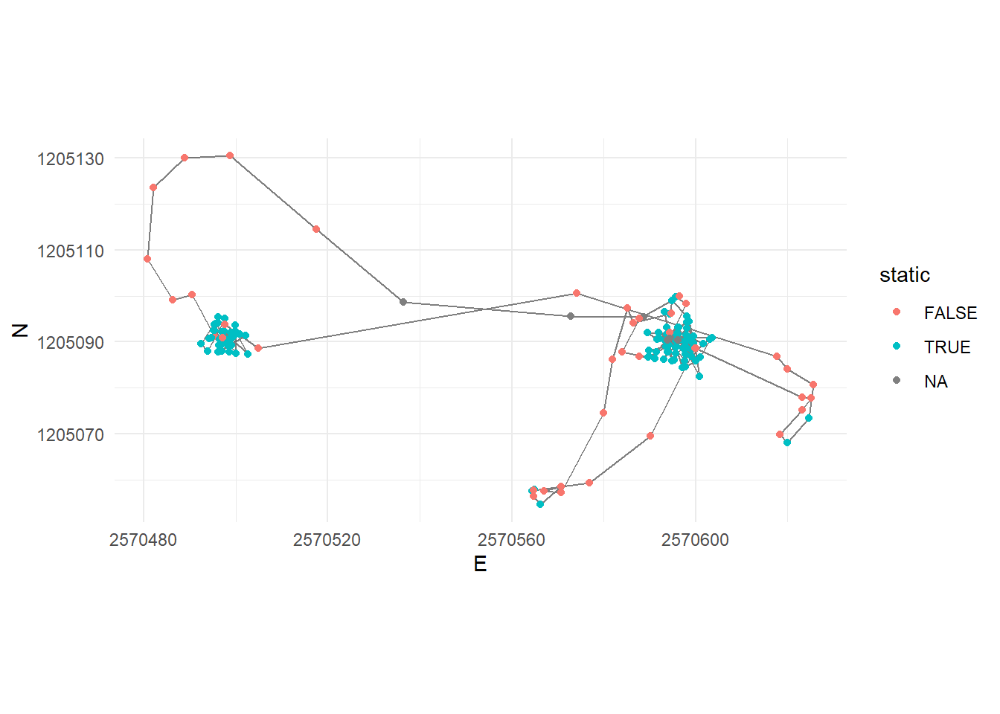
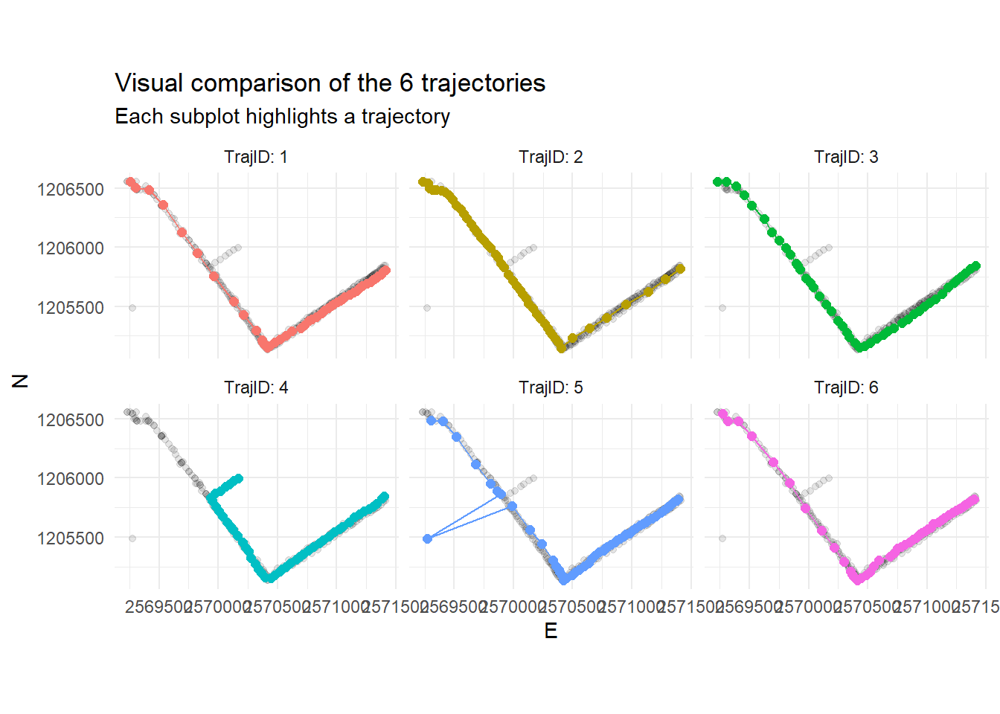
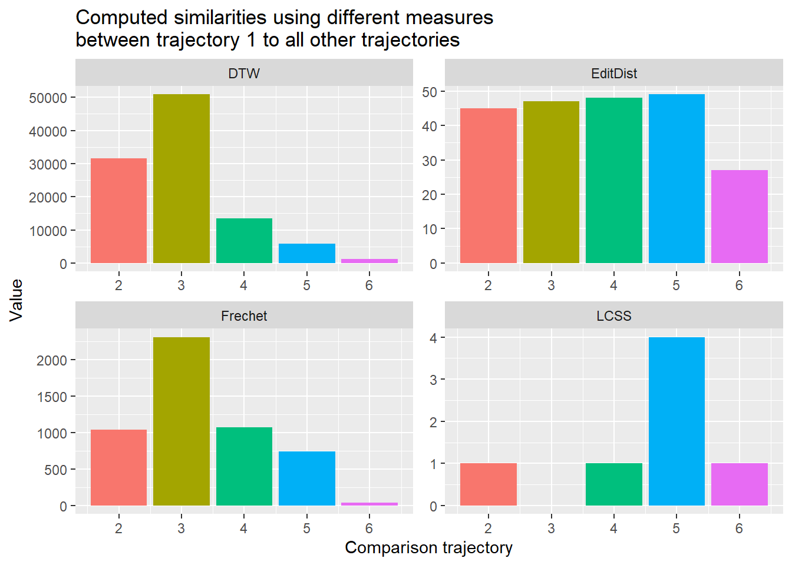

Tasks and Inputs
You’ve read Laube and Purves (2011) about segmenting trajectories. In the paper, the authors define “static” fixes as “those whose average Euclidean distance to other fixes inside a temporal window v is less than some threshold d,” as illustrated in the following figure:

Figure 3: The figure from Laube and Purves (2011) visualizes steps a) zu d), which will be explained below:
- Specify a temporal windows \(v\) for in which to measure Euclidean distances
- Measure the distance from every point to every other point within this temporal window (\(v\))
- Remove “static points”: These are points where the average distance is less than a given threshold. This segments the trajectory into subtrajectories
- Now remove short subtrajectories: These are trajectories with a short duration (whereas “short” is tbd)
We will demonstrate implementing this method on the wild boar “Sabi,” restricting ourselves to a couple of tracking days. Your task will be to understand this implementation and apply it on Caro, with a different sampling interval.
Figure 4: Movement of the wildboar ‘Sabi’ in the timespan 01-02.07.2015. The circle highlingts possible ‘static points’
Step a): Specify a temporal window \(v\)
In the above dataset, the sampling interval is 15 minutes. If we take a temporal window of 60 minutes, that would mean including 4 fixes. We need to calculate the following Euclidean distances (pos representing single location):
pos[n-2]topos[n]pos[n-1]topos[n]pos[n]topos[n+1]pos[n]topos[n+2]
Step b): Measure the distance from every point to every other point within this temporal window \(v\)
Just like last week, we use the formula for calculating the Euclidean distance in in combination with lead() and lag(). For example, to create the necessary offset of n-2, we use lag(x, 2). For each offset, we create one individual column.
sabi <- sabi %>%
mutate(
nMinus2 = sqrt((lag(E,2)-E)^2+(lag(N,2)-N)^2), # distance to pos -30 minutes
nMinus1 = sqrt((lag(E,1)-E)^2+(lag(N,1)-N)^2), # distance to pos -15 minutes
nPlus1 = sqrt((E-lead(E,1))^2+(N-lead(N,1))^2), # distance to pos +15 mintues
nPlus2 = sqrt((E-lead(E,2))^2+(N-lead(N,2))^2) # distance to pos +30 minutes
)Now we want to calculate the mean distance of nMinus2, nMinus1, nPlus1, nPlus2 for each row. Since we want the mean value per Row, we have to explicitly specify this before mutate() with the function rowwise(). To remove this rowwise-grouping, we end the operation with ungroup().
Note that for the first two positions, we cannot calculate a stepMean since there is no Position n-2 for these positions. This is also true for the last to positions (lacking a position n+2).
sabi <- sabi %>%
rowwise() %>%
mutate(
stepMean = mean(c(nMinus2, nMinus1,nPlus1,nPlus2))
) %>%
ungroup()
sabi
## # A tibble: 192 x 11
## TierID TierName CollarID DatetimeUTC E N nMinus2 nMinus1
## <chr> <chr> <dbl> <dttm> <dbl> <dbl> <dbl> <dbl>
## 1 002A Sabi 12275 2015-06-30 22:00:13 2569972. 1.21e6 NA NA
## 2 002A Sabi 12275 2015-06-30 22:16:06 2569975. 1.21e6 NA 271.
## 3 002A Sabi 12275 2015-06-30 22:30:19 2570266. 1.21e6 573. 365.
## 4 002A Sabi 12275 2015-06-30 22:45:13 2570208. 1.21e6 361. 80.5
## 5 002A Sabi 12275 2015-06-30 23:00:10 2570247. 1.21e6 127. 186.
## 6 002A Sabi 12275 2015-06-30 23:15:17 2570512. 1.21e6 703. 524.
## 7 002A Sabi 12275 2015-06-30 23:30:38 2570684. 1.21e6 766. 247.
## 8 002A Sabi 12275 2015-06-30 23:45:16 2570526. 1.21e6 229. 167.
## 9 002A Sabi 12275 2015-07-01 00:00:10 2570532. 1.21e6 163. 9.33
## 10 002A Sabi 12275 2015-07-01 00:15:14 2570530. 1.21e6 8.98 15.4
## # ... with 182 more rows, and 3 more variables: nPlus1 <dbl>, nPlus2 <dbl>,
## # stepMean <dbl>Step c): Remove “static points”
We can now determine if an animal is moving or not by specifying a threshold distance on stepMean. In our example, we use the mean value as a threshold: Positions with distances below this value are considered static.
sabi <- sabi %>%
ungroup() %>%
mutate(static = stepMean < mean(stepMean, na.rm = TRUE))
sabi_filter <- sabi %>%
filter(!static)
sabi_filter%>%
ggplot(aes(E, N)) +
geom_path() +
geom_point() +
coord_fixed() +
theme(legend.position = "bottom")Figure 5: The trajectory of sabi, filtered to the positions where the animal was not static
Task 1: Segmentation
If you haven’t already done so open the RStudio Project you have prepared for this week.
With the skills from the input above you can now implement the segmentation algorithm described in Laube and Purves (2011) on the dataset caro60.csv. Download this dataset (right click > save target as…) and import it as a simple data.frame or tibble (you don’t need an sf-object for today’s task).
The sampling interval for this dataset is 1 minute. Use a temporal window \(v\) of 6 minutes, i.e. a window size of 6 positions (n±3).
Once you have completed the task, commit your changes with a meaningful commit message and test your connection to Github by pushing your changes to your remote repository.
Task 2: Specify and apply threshold d
After calculating the Euclidean distances to positions within the temporal window v in task 1, you can explore these values (we stored them in the column stepMean) using summary statistics (histograms, boxplot, summary()): This way we can define a reasonable threshold value to differentiate between stops and moves. There is no “correct” way of doing this, specifying a threshold always depends on data as well as the question that needs to be answered. In this exercise, use the mean of all stepMean values.
Store the new information (boolean to differentiate between stops (TRUE) and moves (FALSE)) in a new column named static.
Commit your changes with a meaningful commit message.
Task 3: Visualize segmented trajectories
Now visualize the segmented trajectory spatially. Just like last week, you can use ggplot with geom_path(), geom_point() and coord_equal(). Assign colour = static within aes() to distinguish between segments with “movement” and without.
Commit your changes with a meaningful commit message.

Task 4: Segment-based analysis
In applying Laube and Purves (2011), we’ve come as far as steps b in figure 3. In order to complete the last steps (c and d), we need a unique ID for each segment that we can use as a grouping variable. The following function does just that (it assigns unique IDs based on the column static which you created in Task 2). You will learn about functions next week. For now, just copy the following code chunk into your script and run it.
rle_id <- function(vec){
x <- rle(vec)$lengths
as.factor(rep(seq_along(x), times=x))
}You can use the newly created function rle_id to assign unique IDs to subtrajectories (as shown below). Visualize the moving segments by colourizing them by segment_ID.
Then use segment_ID as a grouping variable to determine the segments duration and remove short segments (e.g. segments with a duration < 5 Minutes)
Commit your changes with a meaningful commit message.
caro60 <- caro60 %>%
mutate(segment_id = rle_id(static))
caro60
## # A tibble: 200 x 9
## TierID TierName CollarID DatetimeUTC E N stepMean static
## <chr> <chr> <dbl> <dttm> <dbl> <dbl> <dbl> <lgl>
## 1 010C Caro 13973 2015-09-15 08:07:00 2570589. 1.21e6 NA NA
## 2 010C Caro 13973 2015-09-15 08:08:00 2570573. 1.21e6 NA NA
## 3 010C Caro 13973 2015-09-15 08:09:00 2570536. 1.21e6 NA NA
## 4 010C Caro 13973 2015-09-15 08:10:00 2570518. 1.21e6 53.8 FALSE
## 5 010C Caro 13973 2015-09-15 08:11:00 2570499. 1.21e6 41.2 FALSE
## 6 010C Caro 13973 2015-09-15 08:12:00 2570489. 1.21e6 24.4 FALSE
## 7 010C Caro 13973 2015-09-15 08:13:00 2570482. 1.21e6 17.1 FALSE
## 8 010C Caro 13973 2015-09-15 08:14:00 2570481. 1.21e6 13.4 FALSE
## 9 010C Caro 13973 2015-09-15 08:15:00 2570486. 1.21e6 9.05 FALSE
## 10 010C Caro 13973 2015-09-15 08:16:00 2570490. 1.21e6 10.1 FALSE
## # ... with 190 more rows, and 1 more variable: segment_id <fct>
Task 5: Similarity measures
We will now leave the wild boar data and turn our attentian to human movement. You will use the dataset pedestrian.csv (right click > save target as..) for this (and the following) task. Download an import this dataset as a data.frame or tibble. It it a set of six different but similar trajectories from pedestrians walking on a path.
or this task, explore the trajectories first and get an idea on how the pedestrians moved. We step away from using the wild boar data for this task because our animals don’t express the type of similarity we want to illustrate here. Also, using the constructed pedestrian data allows us illustrating very typical similarity issues, that are picked-up in different ways by the different similarity measures. In later exercises we will get back to our wild boar!
Commit your changes with a meaningful commit message.

Task 6: Calculate similarity
Install the package SimilarityMeasures (install.packages("SimilarityMeasures")). Familiarize yourself with this package by skimming through the function descriptions help(package = "SimilarityMeasures"). Now compare trajectory 1 to trajectories 2-6 using different similarity measures from the package. Your options are. DTW, EditDist, Frechet and LCSS.
Visualize your results and try to understand the different results with respect to your reading of Alan Both (2018). Can you see connections between the properties of the trajectories and the similarity values computed by the different measures?
Note:
- All functions in the package need matrices as input, with one trajectory per matrix.
LCSStakes very long to compute. The accuracy of the algorithm (pointSpacing =,pointDistance =anderrorMarg =) can be varied to provide faster calculations. Please see Vlachos, Gunopoulos, and Kollios (2002) for more information.
Commit your changes with a meaningful commit message. Now push all your changes to Github.
